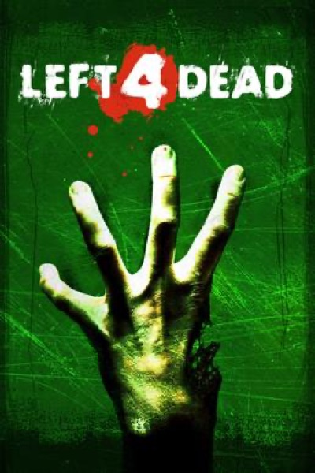

Shooter · 2008
Left 4 Dead
An AI director that learned to frighten four people at once.

Cover: Wikipedia: Left 4 Dead
Facts
- Released
- 2008-11-17
- Genre
- Co-op Shooter
- Category
- Shooter
- Platforms
- PC, Xbox
- Developers
- Turtle Rock Studios, Valve Corporation
- Publishers
- Valve Corporation
PC requirements
- Minimum
- [object Object]
- Recommended
- [object Object]